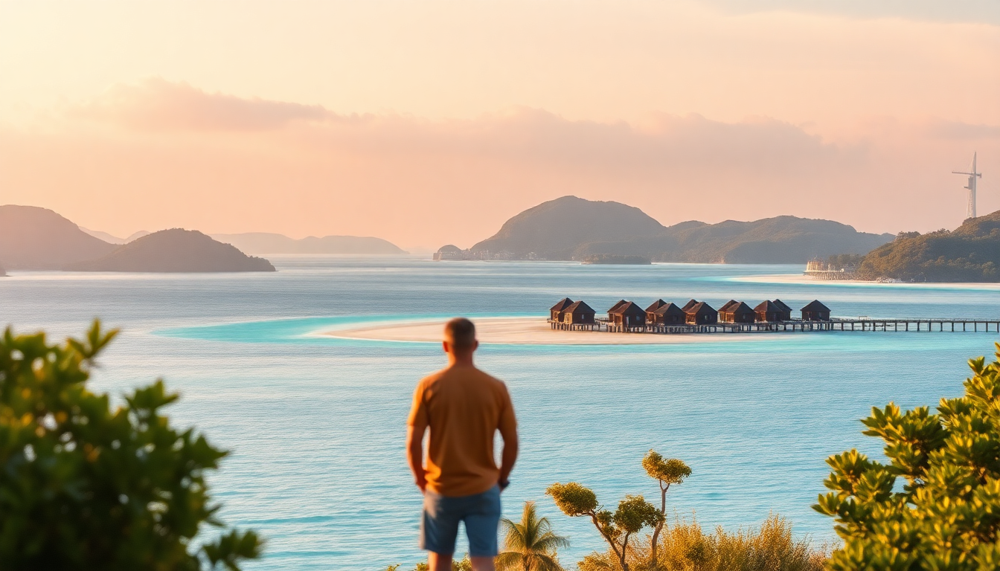

7 Day Maldives Itinerary: Island Hopping & Overwater Bungalows

We landed in Malé with a backpack and a budget that stretched further than we expected. The Maldives isn’t just honeymoon resorts and $500-a-night villas. Over seven days, we island-hopped through North and South Male Atolls, slept in an overwater bungalow (for less than you’d think), ate curry on a local island, and figured out the logistics that most guides gloss over. Here’s exactly how we did it.
Should you start in Malé or skip straight to the atolls?
Most flights land in Malé late in the day, so you’re stuck there for at least one night. Don’t fight it. We landed at 4 p.m., cleared customs in 20 minutes, and walked to our guesthouse in Hulhumalé — a 10-minute taxi ride ($10) across the bridge.
Hulhumalé is the practical entry point. It’s quieter than Malé city proper, with a long beach promenade and decent seafood restaurants. We ate at Seagull Café for grilled reef fish and rice (about $8 a plate). It’s not fine dining, but it’s honest.
- Hulhumalé Beach — good for a sunset walk, not for swimming (currents are strong).
- Malé Fish Market — skip unless you want to see tuna auction at 3 p.m. It’s chaotic and smells.
- Sultan Park — small green space in Malé, worth 20 minutes if you’re killing time before a ferry.
We stayed at Samann Grand in Malé — a clean, mid-range hotel with a rooftop breakfast. No frills, but the staff helped us book our speedboat transfer to the atoll the next morning.
How do you get from Malé to the atolls without overpaying?
Speedboats are the default. Resorts charge $100–$200 per person for a private transfer. We used the public ferry system for the first leg and saved $150.
From Malé’s Villingili Ferry Terminal, we caught the public ferry to Maafushi (South Male Atoll). It runs once daily at 3 p.m., costs $3 per person, and takes 90 minutes. The boat is basic — no air conditioning, plastic seats, locals hauling cargo — but it’s an authentic slice of Maldivian life.
- Speedboat to Maafushi — $25–$35 per person if you book through your guesthouse. Faster (30 minutes) and more comfortable.
- Public ferry schedule — unreliable in bad weather. Always have a backup speedboat booked.
- Malé to North Male Atoll — no public ferry. You’ll need a speedboat or a private charter.
For the return trip, we booked a speedboat from Maafushi back to Malé through Kaani Village Hotel — they arranged it for $30 per person, door-to-door.
Which guesthouse in Maafushi offers the best value?
Maafushi is the local island where budget travelers base themselves. It’s not a private resort island — there are shops, a mosque, and a football field — but the beaches are clean and the water is turquoise.
We stayed at Kaani Village Hotel for three nights. It’s not on the beach (Maafushi’s guesthouses rarely are), but it’s a 3-minute walk to Bikini Beach — the only stretch where tourists can wear swimsuits. The room was basic: air conditioning, hot water, a double bed. We paid $70 per night including breakfast.
- Arena Beach Hotel — slightly pricier ($90/night) but has a rooftop pool and a better restaurant.
- WhiteShell Inn — budget option ($50/night), clean but no frills.
- Maafushi Jailbreak — a snorkeling trip that takes you to Sandbank and Turtle Reef. We paid $25 per person through our guesthouse.
For dinner, skip the tourist-heavy Kaani Restaurant and walk to Hot Bite — a local joint serving mas huni (shredded tuna with coconut) and roshi flatbread for $3. It’s not Instagrammable, but it’s the best breakfast on the island.
What’s the best day trip from Maafushi?
We booked a full-day island-hopping and snorkeling trip through Maafushi Dive Centre for $40 per person. It included five stops: sandbank, reef snorkeling, a visit to the local island of Guraidhoo, lunch on Fulidhoo, and a manta ray spotting session.
- Sandbank stop — a 30-minute photo op on a strip of white sand in the middle of the ocean. Bring sunscreen.
- Turtle Reef — we saw two green sea turtles within 10 minutes of dropping in. Clear visibility, mild current.
- Guraidhoo — smaller than Maafushi, with a handicraft market and a fishing harbor. We bought a hand-painted sarong for $5.
- Fulidhoo — lunch was included: grilled tuna, rice, and coconut salad. Simple but fresh.
The boat crew was local and spoke enough English to point out reef sharks and eagle rays. We tipped $5 per person at the end.
Can you stay in an overwater bungalow without spending $1,000 a night?
Yes, but you have to compromise on luxury. We booked one night at Cocoon Maldives in North Male Atoll — an all-inclusive resort with overwater villas. The catch: we booked a “last-minute” rate through their website three days before arrival. It cost $350 for the night, including all meals and drinks.
The villa was smaller than the Instagram photos suggest — think 300 square feet, not 500 — but the glass floor panel showed reef fish swimming underneath, and we could jump off the deck into the lagoon. The buffet dinner was mediocre (overcooked pasta, watery curry), but the sunset from the overwater bar made up for it.
- Cocoon Maldives — overwater villa for $350/night (off-peak). Book direct, not through third-party sites.
- Adaaran Prestige Vadoo — South Male Atoll, overwater villas from $500/night. Better food, stricter dress code.
- Budget hack — stay on a guesthouse island and take a day trip to a resort’s overwater restaurant for lunch. Anantara Veli in South Male Atoll offers a day pass for $100, which includes pool access and a credit toward food.
We didn’t love the resort vibe — it felt curated and quiet — but one night was enough to get the overwater experience without the credit card hangover.
Which island in South Male Atoll is worth a side trip?
Gulhi is a 15-minute speedboat ride from Maafushi and feels like Maafushi did ten years ago: fewer tourists, more fishing boats, and a slower pace. We spent a half-day there and wished we had booked a night.
The guesthouse scene on Gulhi is smaller. We checked out Rihiveli Inn — $55 per night, right on the beach, with a hammock strung between two palm trees. The owner, Ahmed, took us out on his fishing boat for $20 per person. We caught small reef fish and grilled them on the beach for dinner.
- Gulhi Beach — quieter than Maafushi’s Bikini Beach. Good for swimming at high tide.
- Thundi Beach — a sandbank accessible by boat from Gulhi. We had it to ourselves for an hour.
- Local tip — Gulhi has no ATMs. Bring cash from Malé or Maafushi.
We ate lunch at Albatross Café — a roof terrace overlooking the harbor. The tuna curry with roti was $4 and came with a side of chili paste that cleared my sinuses.
How do you get back to Malé without stress?
Our flight departed at 11 p.m., so we had a full last day in Malé. We took the public ferry from Maafushi at 3 p.m., arrived in Malé at 4:30 p.m., and had time to visit the National Museum (closed for renovation when we went, so call ahead) and grab dinner at Sala Thai — a proper Thai restaurant in the Hulhumalé phase 2 area, not the tourist strip.
- Speedboat from Maafushi to Malé — book by 10 a.m. the day before. Last departure is usually 5 p.m.
- Malé airport — arrive 2 hours before domestic flights, 3 hours before international. Security is slow.
- Last-minute souvenir — skip the airport shops. Buy a coconut shell bowl from the Malé Local Market for $2.
We spent our final hour at Hulhumalé Central Park, watching kids fly kites and locals jog the perimeter. It felt real — not a curated farewell, just a normal evening in the Maldives.
FAQ
Is the Maldives worth it for a week? Yes, but only if you island-hop. Seven days in one resort gets boring. Splitting time between a local island (Maafushi or Gulhi) and one night in an overwater bungalow gives you variety without burnout.
Do I need a visa for the Maldives? No. Citizens of most countries get a free 30-day visa on arrival. Just show a valid passport (6 months validity) and a return ticket.
What’s the best time to visit for budget travelers? May to November is low season. Weather is hit-or-miss (afternoon showers), but guesthouse rates drop by 40%. We went in October and had 5 sunny days out of 7.
Conclusion
- Start in Hulhumalé or Malé for the first night, then take the public ferry to Maafushi to save money.
- Book a day trip from Maafushi to cover sandbanks, reef snorkeling, and local islands like Guraidhoo and Fulidhoo.
- Splurge on one night in an overwater bungalow at a resort like Cocoon Maldives, but book direct and off-peak.
- Visit Gulhi for a quieter, cheaper alternative to Maafushi.
- Use speedboats for transfers, but check public ferry schedules for the Malé–Maafushi route.